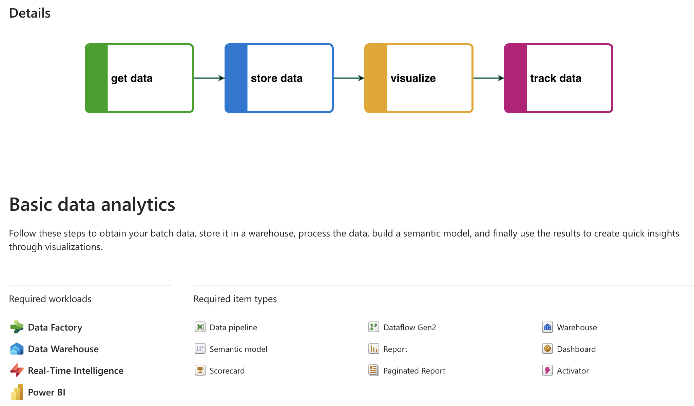
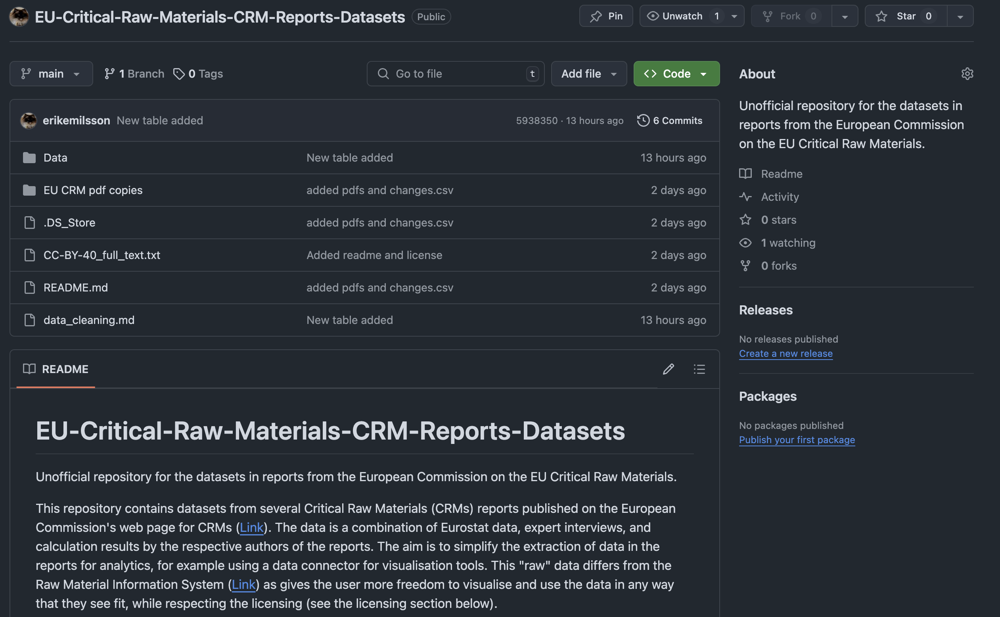
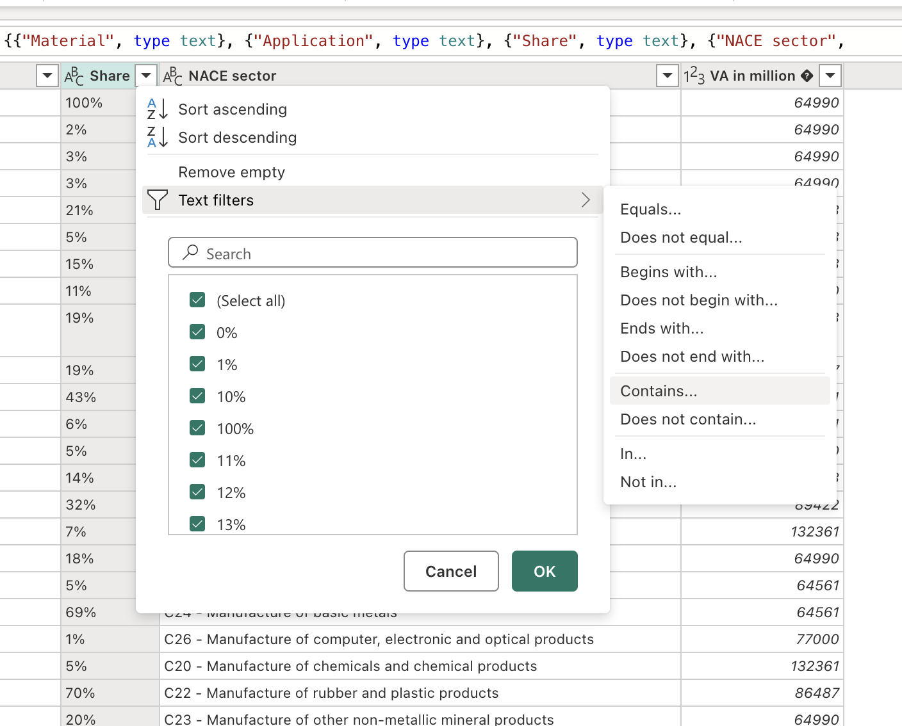
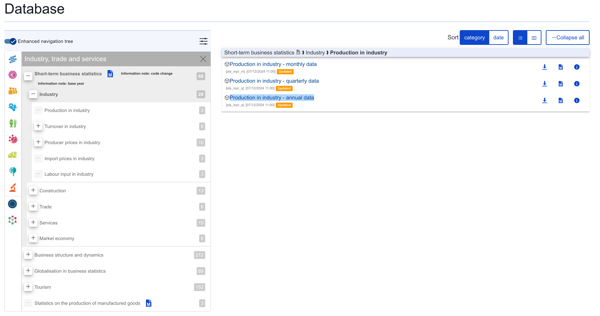

Microsoft Fabric EU Critical Raw Materials Learning Project
Executive Summary
Project and Data Overview: An end-to-end data analytics project in Microsoft Fabric (a SaaS data platform) using publicly available statistics data from pdfs and APIs. The aim is to enhance existing ad-hoc analyses found in pdf-reports published by the European Commision by connecting to new data sources, including:
- various material, country, and region-level data (from the EU Commissions pdf reports),
- market-sector-level historical and updated EU production indicator in Euro (from the Eurostat API),
- live exchange rate data (from fixer.io API), and
- country-level environmental impact indicators (from the Yale Environmental Performance Index, EPI).
Business Question: How can a European business use the EU list of Critical Raw Materials (EU CRM) with additional metrics to mitigate supply chain risks?
Project Walkthrough
In this project I use Microsoft Fabric to create dynamic custom visuals based on static data and reports from the European Commission’s list of Critical Raw Materials (EU CRM). I also use annually updated Eurostat datasets to compare with the every-third-year updated EU CRM list datasets.
These two approaches enable additional and fresher insights to be gained from the EU CRM list, which is at the heart of the EU Critical Raw Material strategy and legislation (EU CRM Regulation).
EU CRM measure and prioritize material resource use quantitatively and qualitatively through risks associated with each respective material, broken down into the main categories of:
- Economic Importance
- Supply Risk
Classical risk theory is used to calculate the overall risk for each material, based on the main categories which are, in turn, calculated using combinations of various indicators. See the EU CRM methodology document for how the indicators form the main categories.
Ingesting data with dataflows in Data Factory
To start I open up a template for ‘Basic data analytics’ in Data Factory and name the workspace ‘CRM Learning Project’, which gives me just the necessary workloads I need for my analysis, namely:
- Data Factory for orchestrating
- Data Warehouse for importing structured data
- Real-Time Intelligence to test out live price data, and
- Power BI for visualizations.

Importing EU Critical Raw Materials Data
I imported the main data from pdfs on the EU Commission’s site for CRM. I initially found the data to be almost impossible to clean using the Dataflow Gen2 connectors. There were many mismatched columns and cell values or critical errors in the datafram structures. I chose to publish my own cleaned datasets (using Power Query and manual cleaning) in a public github repository. This had several positives, including:
- the simplification of data ingestion to Data Factory,
- enabling other analysts and developers to use the datasets and collaborate,
- enabling transparency into the data cleaning steps,
- scalability and tracking of future updates.

To import to Data Factory, I create a Dataflow Gen2 connect to each csv file using the Web API connector and enter the github repository csv-file URL and set ‘Authentication kind’ to Anonymous since the data is public.
To link to the csv files I used the direct Github link address structure: https://raw.githubusercontent.com/<username>/<repository>/<branch>/<filepath>/<filename>.csv
During import I performed some simpler cleaning:
- In the ‘Share’-column I removed rows with the value ‘<1%’.
- In the ‘Share’-column I
- removed the percent signs with the ‘Replace values’ function,
- divided the values by 100,
- changed the datatype to ‘Whole Number’ temporarily so i can perform standard mathematical operations with the function under the ‘Transform’ tab, and
- changed the datatype to percent.
- I replaced ‘-’ values with null using the ‘Replace values’ function.
- I changed datatypes of decimals to “Decimal Number”
- I replaced ‘PGMs’, ‘HREEs’, and ‘LREEs’ values with ‘PGM’, ‘HREE’, ‘LREE’, respectively.

Importing Eurostat Data
Eurostat contains a wealth of information for the EU on the country-level, but for this analysis I used it to connect to a specific respective dataset in the static EU CRM report for comparison. The methdology report states that ‘NACE v2’ categories indicating ‘production in industry’ to describe each country’s demands.
Import by going to the Eurostat database, select ‘Industry, trade and services’, and ‘Short-term business statistics’, and ‘Industry’, and ‘Production in Industry’. Then click on the ‘Production in industry - annual data’ dataset.

In the next page, set the filters to only include the NACE rev. 2 activities C19-C31 based on the existing activities in the static EU Critical Raw Materials Data which I will later connect to in the data model. After the filtering, clicking ‘download’ will open up options. Clicking ‘Advanced settings’ opens up additional options from which choosing the ‘SDMX-ML Genergic Data (2.1)’ will give a link to which the Dataflow Gen2 connector can use the ‘SIS-CC SDMX’ API connector with. Finally, selecting only the relevant rows and setting the datatypes will yield the desired table for publishing in Data Factory.
In addition to changing data types, I added a custom column and used the code below to cut out the first three letters/numbers from the NACE column to ensure accurate connections to the model in Power BI later on.
Text.Start([NACE sector], 3)Importing live feed of exchange rates
I wanted a use-case for Microsoft’s Real-Time Intelligence, so I found fixer.io which provides a free-tier api of hourly-updated exchange rates. From its API, I import streaming data to connect to Power BI’s data model later. The data I import is the exchange from Euros to Swedish Krona (SEK), to be used to translate the costs for Swedish businesses.
Importing Yale Environmental Performance Indicator (EPI) Data
Yale EPI data is published annually in csv files. I uploaded the files to my github portfolio repository because they couldn’t be uploaded directly to Fabric as it wasn’t tied to a OneDrive for Business account. A simple Dataflow Gen2 connector using Web API was enough to ingest the data to the Data Factory.
Creating a data warehouse and datalake to house data in Parquet format (tbc)
Saving to data warehouse (tbc)
All my tables except for the exchange rates are fed into the data warehouse I create in Data Factory.
I use a Dataflow gen2 connector for the import step, and see an issue that several different country codes are being used for tables coming from different sources. To manage these discrepancies, I decide to translate each table’s countries to the ISO 3-letter standard. To do this I:
- Importing another table with ISO country codes
- that I use to translate existing tables’ countries with.
Here I also notice some characters that are not allowed, such as ‘ü’ in Türkye, which I fix in the original Dataflow gen2 connector. #### Saving to historical exchange rate to datalake (tbc)